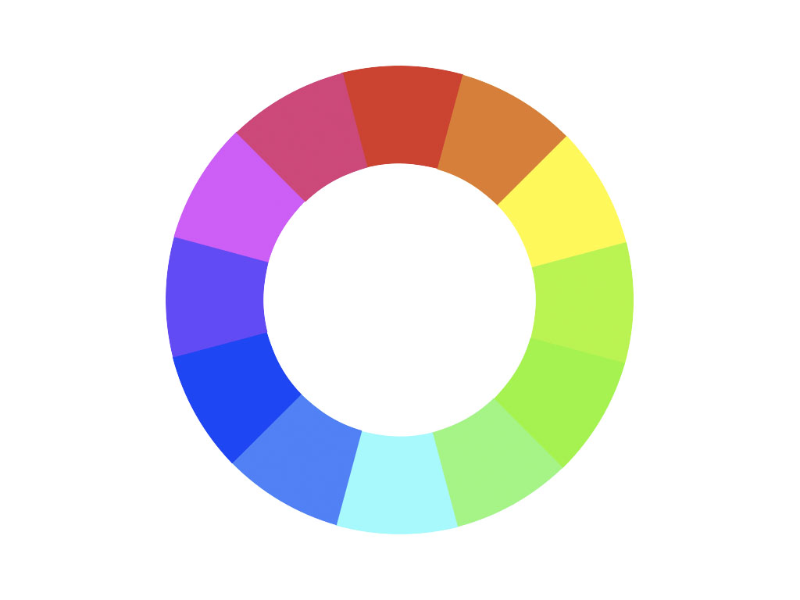

Fato interessante número 1:

Esses animais possuem o mais complexo de visão de cores do mundo animal, pois
enxergam 12
cores primárias, correspondentes aos 12 pigmentos distintos presentes em sua retina.
Nossos
olhos possuem três tipos desses receptores - que correspondem à luz azul, verde e vermelha -, que
nos permitem perceber o espectro de cores que vemos. Os cães contam com apenas dois tipos de cones
(verde e azul), e é por isso que eles vêm tons de azul, verde e um pouco de amarelo. Muitos
anfíbios, répteis, aves e insetos possuem quatro tipo de cones, o que significa que espécies dessas
classes conseguem ver cores que o nosso cérebro é incapaz de processar. Algumas espécies específicas
de borboletas e possivelmente pombos possuem cinco cones de percepção de cor, o que aumenta ainda
mais a quantidade de pigmentos que eles são capazes de perceber. O sistema de visão dos
estomatópodes possui doze cones sensíveis à luz e outros quatro que filtram a luz (16 cones no
total), o que lhes permite ver cores polarizadas e imagens multiespectrais.
Como cada cone pode ver cerca de 100 cores, os estomatópodes são capazes de ver 1024 cores, ou seja,
1 septilhão de cores. Em comparação, o olho humano vê 106 cores, ou seja, 1 milhão de cores apenas.
A visão dos estomatópodes é sensível à luz ultravioleta, mas ainda é desconhecido se ela pode
distinguir a luz infravermelha.